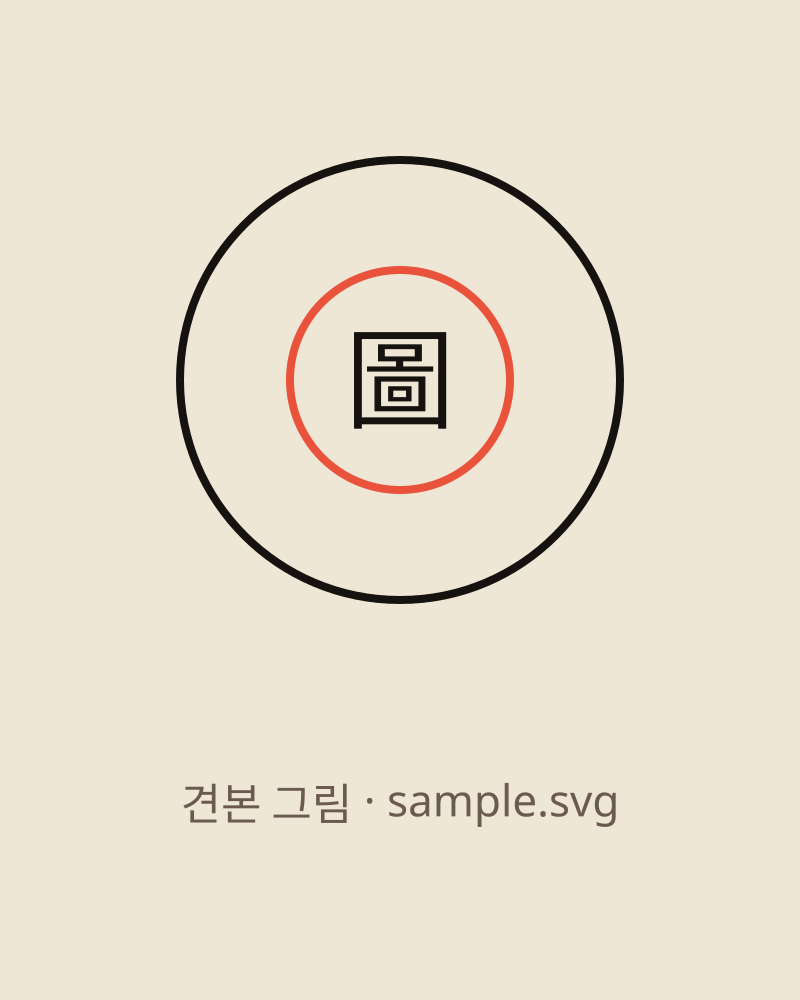

학회 이름 · SESSION 1 · 세션 주제
CONFERENCE NAME IN ENGLISH
CASE 0000 · 자료 이름
발표 제목
두 줄까지
부제 한 줄
印
行事標語
01I 물음
연구 물음
學而時習之。
학이시습지
배우고 때때로 익힘.『논어』 「학이」
03II 근거
그림 1 원문 제목

그림 1 · 자료 이름
출처 · 소장처
| 구분 | 견해 A | 견해 B |
|---|
| 원문 | 原文甲 | 原文乙 |
| 뜻 | 풀이 A | 풀이 B |
그림 번호와 출처는 논문과 같게
04II 근거
선행연구 비교
이 글
이 글의 판단 한 줄
앞선 연구와 다른 점
05III 답
결론 · 토론
행사 표어발표 제목 · 발표자
A참고자료
선행연구
| 연구자 | 논문 |
|---|
| 연구자 A | 「논문 제목」, 『학술지』 10, 2000 |
| 연구자 B | 「논문 제목」, 『학술지』 132, 2012 |
← → 넘김 · H 띠 · P 원고
핵심